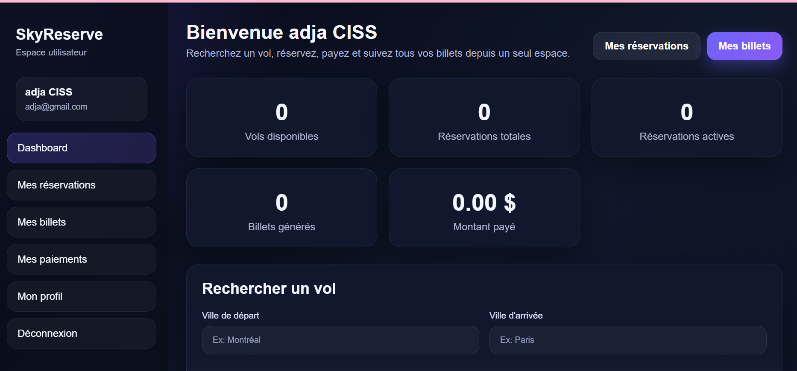

01 / PROJET PRINCIPAL
SkyReserve
JAVA · SPRING BOOT · FULL-STACK
Plateforme web de réservation de billets d'avion. L'utilisateur recherche un vol, réserve, paie et retrouve ses billets dans un espace personnel avec tableau de bord.
- Recherche de vols par ville de départ et d'arrivée
- Inscription, connexion et espace utilisateur
- Réservations, paiements et génération de billets
- Tableau de bord avec statistiques personnelles
- Administration des vols et des réservations
